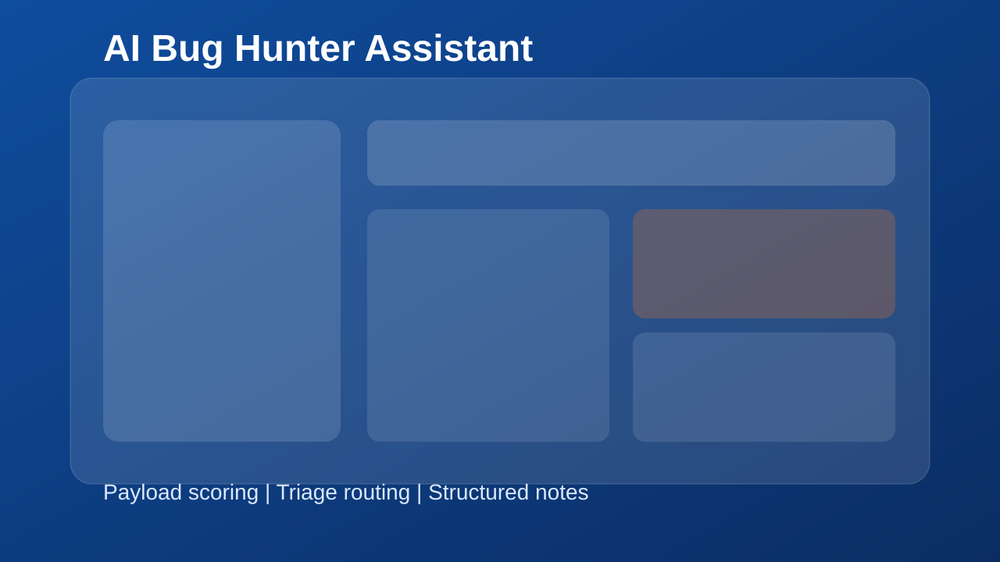
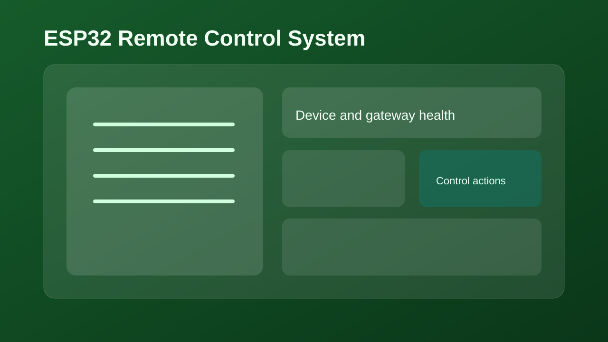

Problem
Slow and noisy reconnaissance
I build scripts that normalize recon data into prioritized targets so testing starts with high-value surfaces.
Security tooling portfolio
My work combines offensive testing, Python tooling, and automation design to shorten investigation time and improve report quality.
What I solve
This portfolio is structured around real workflow problems in offensive security and engineering teams.
Problem
I build scripts that normalize recon data into prioritized targets so testing starts with high-value surfaces.
Problem
I capture payload logic and request sequences in clear steps, making reports easier to verify and remediate.
Problem
I connect scripts, APIs, and lightweight interfaces so teams can reuse the same workflow across targets.
Featured Work

Problem: repetitive payload testing and manual triage during bug bounty work.
Outcome: faster payload iteration and cleaner finding notes with a repeatable scoring flow.

Problem: fragmented host and endpoint discovery data across multiple tools.
Outcome: consolidated target maps with categorized attack surface snapshots.

Problem: need for low-cost remote automation with stable command flow.
Outcome: practical IoT prototype with status monitoring and reliable toggles.
I can support scoped testing, workflow automation, and implementation-focused security projects.